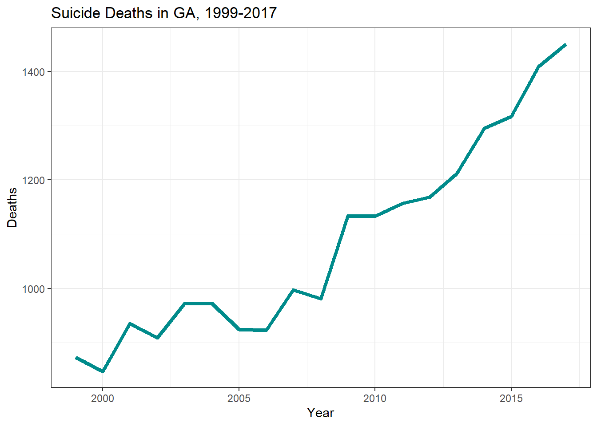
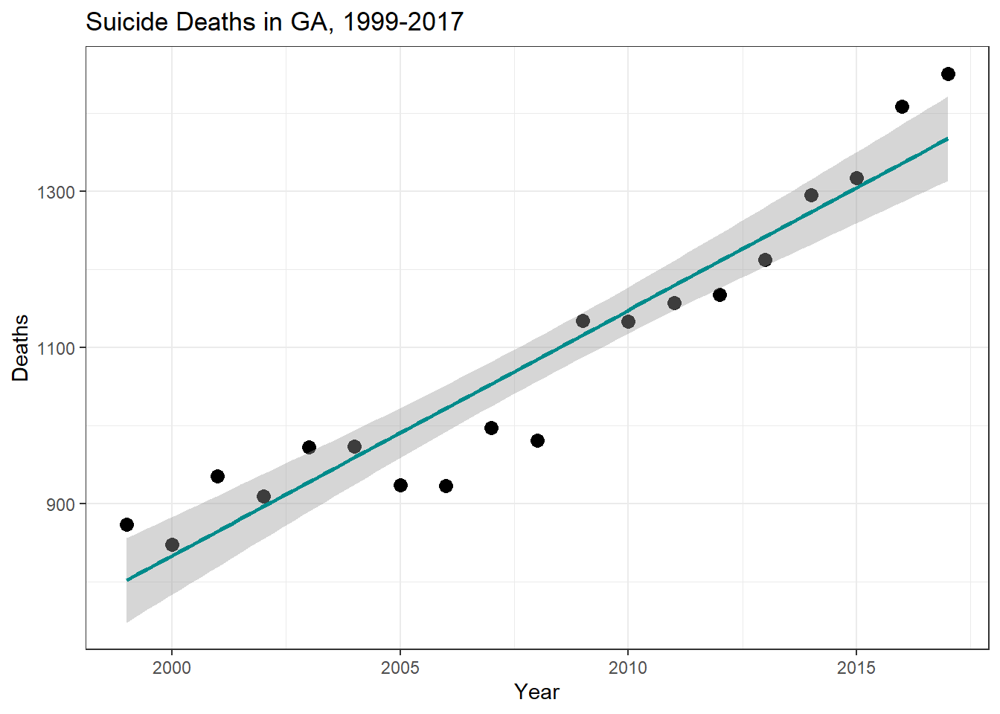
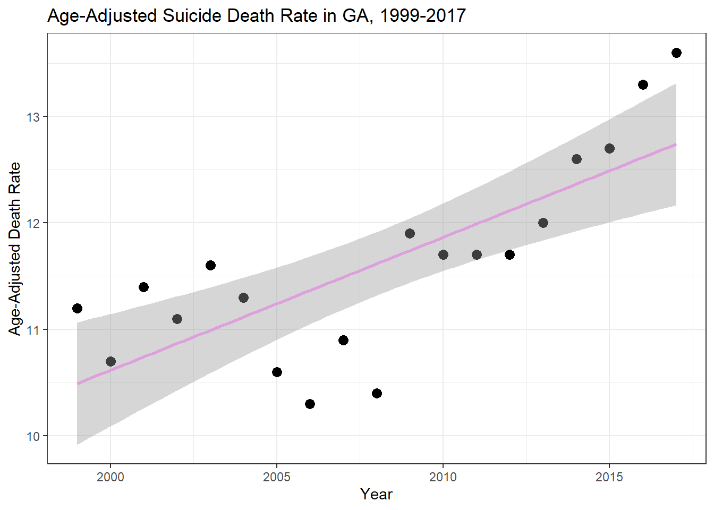

This dataset contains the age-adjusted death rates for the 10 leading causes of death in the United States beginning in 1999. The age-adjusted rates (per 100,000 population) were based on the 2000 standard population. While it contains an incredibly detailed report about all top 10 causes of death in each of the 50 states (and the District of Columbia) from 1999 to 2017, this data analysis will focus on the temporal trends of suicide rates in Georgia.
Loading the dataset
First, we are going to load the necessary packages for this exercise.
#loading the required packageslibrary(tidyverse)
Warning: package 'tidyverse' was built under R version 4.2.3
Warning: package 'ggplot2' was built under R version 4.2.3
Warning: package 'tibble' was built under R version 4.2.3
Warning: package 'tidyr' was built under R version 4.2.3
Warning: package 'readr' was built under R version 4.2.3
Warning: package 'purrr' was built under R version 4.2.3
Warning: package 'dplyr' was built under R version 4.2.3
Warning: package 'stringr' was built under R version 4.2.3
Warning: package 'forcats' was built under R version 4.2.3
Warning: package 'lubridate' was built under R version 4.2.3
── Attaching core tidyverse packages ──────────────────────── tidyverse 2.0.0 ──
✔ dplyr 1.1.1 ✔ readr 2.1.4
✔ forcats 1.0.0 ✔ stringr 1.5.0
✔ ggplot2 3.4.1 ✔ tibble 3.2.1
✔ lubridate 1.9.2 ✔ tidyr 1.3.0
✔ purrr 1.0.1
── Conflicts ────────────────────────────────────────── tidyverse_conflicts() ──
✖ dplyr::filter() masks stats::filter()
✖ dplyr::lag() masks stats::lag()
ℹ Use the conflicted package (<http://conflicted.r-lib.org/>) to force all conflicts to become errors
library(here)
here() starts at C:/Users/vjpan/Desktop/MADA/MADA2023/vijaypanthayi-MADA-portfolio
library(dplyr)
Now we can read the original data set into R Studio.
#loading the dataset into Rtoptendeath <-read_csv(here("NCHS_-_Leading_Causes_of_Death__United_States.csv"))
Rows: 10868 Columns: 6
── Column specification ────────────────────────────────────────────────────────
Delimiter: ","
chr (3): 113 Cause Name, Cause Name, State
dbl (1): Year
num (2): Deaths, Age-adjusted Death Rate
ℹ Use `spec()` to retrieve the full column specification for this data.
ℹ Specify the column types or set `show_col_types = FALSE` to quiet this message.
The following steps will be to clean the data so that it only contains the factors we will be analyzing and that the data for those variables are clean/usable.
First we are going to reclassify the categorical variables.
toptendeath <- toptendeath %>%mutate(`113 Cause Name`=as.factor(`113 Cause Name`)) %>%mutate(`Cause Name`=as.factor(`Cause Name`)) %>%mutate(State =as.factor(State))glimpse(toptendeath)
Next, we are going to remove all data points that are not from Georgia. In addition, we are going to remove the 113 Cause Name, as that is not the cause of death category we are using.
clean_toptendeath <- toptendeath %>%select(-(`113 Cause Name`))glimpse(clean_toptendeath)
This step created three different data set variables: clean_toptendeath is the original data set without the “113 Cause Name” column ga_clean_toptendeath is the clean_toptendeath but only with the observations regarding Georgia ga_suicide is the ga_clean_toptendeath but only with the observations regarding suicide
Now that the data is cleaned and only contains the yearly suicide deaths in Georgia from 1999 - 2017, we can save this new data set.
First, I want to get an idea of the yearly trends in suicide deaths in GA, based on the clean RDS file created by Vijay. To do this, I will plot both suicide deaths and age-adjusted suicide death rate in GA versus year.
Warning: Using `size` aesthetic for lines was deprecated in ggplot2 3.4.0.
ℹ Please use `linewidth` instead.

ggplot(ga_suicide_data, aes(Year, `Age-adjusted Death Rate`))+geom_line(size =1.5, color="plum")+xlab("Year")+ylab("Age-Adjusted Death Rate")+labs(title ="Age-Adjusted Suicide Death Rate in GA, 1999-2017")+theme_bw()
There appears to be an increase in both suicide deaths and age-adjusted suicide death rates in GA during the study period. I will do some simple modeling to determine if there is any statistical correlation.
#linear model of suicide deaths vs yearsuicide_model <-lm(Deaths~Year, data = ga_suicide_data)summary(suicide_model)
Call:
lm(formula = Deaths ~ Year, data = ga_suicide_data)
Residuals:
Min 1Q Median 3Q Max
-103.74 -36.24 12.94 33.04 83.25
Coefficients:
Estimate Std. Error t value Pr(>|t|)
(Intercept) -62058.06 4880.06 -12.72 4.12e-10 ***
Year 31.45 2.43 12.94 3.15e-10 ***
---
Signif. codes: 0 '***' 0.001 '**' 0.01 '*' 0.05 '.' 0.1 ' ' 1
Residual standard error: 58.02 on 17 degrees of freedom
Multiple R-squared: 0.9078, Adjusted R-squared: 0.9024
F-statistic: 167.4 on 1 and 17 DF, p-value: 3.152e-10
#linear model of age-adjusted suicide death rate vs yeardeath_rate_model <-lm(`Age-adjusted Death Rate`~Year, data = ga_suicide_data)summary(death_rate_model)
Call:
lm(formula = `Age-adjusted Death Rate` ~ Year, data = ga_suicide_data)
Residuals:
Min 1Q Median 3Q Max
-1.2158 -0.3530 0.1593 0.4218 0.8600
Coefficients:
Estimate Std. Error t value Pr(>|t|)
(Intercept) -239.2081 51.8124 -4.617 0.000246 ***
Year 0.1249 0.0258 4.841 0.000153 ***
---
Signif. codes: 0 '***' 0.001 '**' 0.01 '*' 0.05 '.' 0.1 ' ' 1
Residual standard error: 0.616 on 17 degrees of freedom
Multiple R-squared: 0.5796, Adjusted R-squared: 0.5548
F-statistic: 23.44 on 1 and 17 DF, p-value: 0.000153
Now I want to plot these models against the data.
ggplot(ga_suicide_data, aes(Year, Deaths))+geom_point(cex=3)+geom_smooth(method ="lm", color ="darkcyan")+xlab("Year")+ylab("Deaths")+labs(title ="Suicide Deaths in GA, 1999-2017")+theme_bw()

ggplot(ga_suicide_data, aes(Year, `Age-adjusted Death Rate`))+geom_point(cex=3)+geom_smooth(method ="lm", color ="plum")+xlab("Year")+ylab("Age-Adjusted Death Rate")+labs(title ="Age-Adjusted Suicide Death Rate in GA, 1999-2017")+theme_bw()

While this analysis was rather rudimentary based on the dataset at hand, the inclusion of additional covariates from related datasets could yield more informative results. Overall however, there was a statistically significant increase in the number of suicide deaths and the age-adjusted suicide death rate in GA between the years 1999 and 2017.